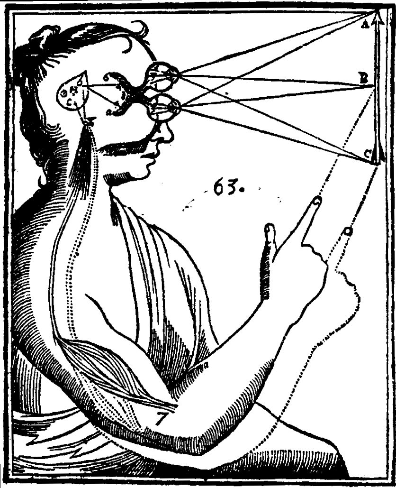

third eye / pineal gland
サードアイ
「第三の目を開く」と検索した。開くと何が起きるのか。開き方の動画のとおりに眉間に集中したら、額が痛くなった。危ないのか。この分野で「持ち上げすぎ」と呼ばれているものと、四つの手順と三つのしるし。「松果体」について医学が知っていること（メラトニン、退化した第三の目、デカルトの「魂の座」）。

「第三の目を開く」で検索した。開くと、見えないものが見える、直観が鋭くなる、と書いてある。動画のとおりに眉間に意識を集めていたら、額の奥が重くなって、頭痛がするようになった。これは開きかけているのか。それとも、やりすぎで、何かを壊したのか。
このページでは、この分野で名前の知られた人が、第三の目を何だと説明し、なぜ「持ち上げすぎている」と言い、どう開けばよいと言い、開きはじめのしるしを何だと言っているかを見ます。そのあとで、この分野が第三の目と結びつけている脳の小さな器官「松果体」について、医学が知っていることを隣に置きます。そこには、思っているより面白い話があります。
第三の目とは、何だと言われているのか
インドの伝統では
ヒンドゥー教で、第三の目はアージュニャー（眉間の）チャクラを指します。額の中央、眉のつなぎ目の少し上にあるとされ、瞑想によって至る悟りを表します。ヒンドゥー教徒が眉間につける「ティラカ」の印は、第三の目を表したもので、シヴァ神は「三つの目を持つ主」と呼ばれます。その第三の目は、知の力と、悪を見抜くことの象徴です。
仏教には「第三の目」にあたる言葉はありませんが、近いものが二つあります。瞑想の修行で得られる超常の知のひとつ「天眼」——遠くのもの、天の世界、生き物の行く末を見る力——と、仏の眉間にある「白毫（びゃくごう）」——白い巻き毛で、光を放って無数の世界を照らすとされる、三十二相のひとつ。仏像の眉間の小さな突起が、それです。
ヒンドゥー教で、第三の目はアージュニャー（眉間の）チャクラを指します。額の中央、眉のつなぎ目の少し上にあるとされ、瞑想によって至る悟りを表します。ヒンドゥー教徒が眉間につける「ティラカ」の印は、第三の目を表したもので、シヴァ神は「三つの目を持つ主」と呼ばれます。その第三の目は、知の力と、悪を見抜くことの象徴です。
仏教には「第三の目」にあたる言葉はありませんが、近いものが二つあります。瞑想の修行で得られる超常の知のひとつ「天眼」——遠くのもの、天の世界、生き物の行く末を見る力——と、仏の眉間にある「白毫（びゃくごう）」——白い巻き毛で、光を放って無数の世界を照らすとされる、三十二相のひとつ。仏像の眉間の小さな突起が、それです。
この分野では、こう説明されています。
「第三の目は、七つのチャクラの六番目で、色は藍色。内なる視力を受け持ちます。肉眼は外へしか向きませんが、第三の目は360度——外も、内も——見る。より高い視点から、鷲が空高く舞うように、人間の頭では見えない視点から人生を見る。そして、真実を見る。人が嘘をついているときだけでなく、あなたが自分に嘘をついているときも」
「インドの神秘家サドグルの言い方が好きです。第三の目は『視野の澄み』を与える、と」
「インドの神秘家サドグルの言い方が好きです。第三の目は『視野の澄み』を与える、と」
「持ち上げすぎている」、と
「開き方」の話は、その前に、この分野への注意から始まっています。
「これは、過大に見積もられているチャクラです。ほかのチャクラより大事なチャクラがある、という意味ではなく、この分野で過剰に注目されてきた、という意味です。なぜか。私たちは何百年も——とくにヨーロッパの啓蒙の時代以来——頭に第一の価値を置いてきた。第三の目は頭と脳につながるチャクラなので、そこばかりが強調された」
「その結果、下のチャクラの作業をせずに、いきなり第三の目に集中する人が出てくる。『これをやれば、いますぐ第三の目が開く』という動画や記事を見て。これは問題になりえます。怖がらせたいのではありません。ただ、エネルギーをまず下へ、地につけてから、第三の目を責任をもって使う、という順番が要る」
「その結果、下のチャクラの作業をせずに、いきなり第三の目に集中する人が出てくる。『これをやれば、いますぐ第三の目が開く』という動画や記事を見て。これは問題になりえます。怖がらせたいのではありません。ただ、エネルギーをまず下へ、地につけてから、第三の目を責任をもって使う、という順番が要る」
開けようとして、壊れること
「第三の目は、不安定になることがあります。二つの場合に。ひとつは目覚めの初期、とくに痛みを通って急に目覚めたとき——内側で核爆発のようにすべてのチャクラが開いて、第三の目の覆いが一度にたくさん外れる。これは一時的で、地につける練習をすれば落ち着きます。私にも少し起きました」
「もうひとつは、わざと。あなたが自由意志で、YouTubeのどこかの似非グルの『これで第三の目が開く』を見て、第三の目、第三の目、と集中し、力がほしい、超能力がほしい、と念じる。自由意志だけで完全に開くことはできませんが、不安定にすることは、できます。とくに、下のチャクラの作業をしていないときに」
「不安定になると、何が起きるか。『神症候群』——自分はイエスの再来だ、マグダラのマリアだ、モーセだ、と言いはじめる。極端な自己中心。『見て、私にはこんな力がある』。まれですが、極端な場合には、幻覚と精神病にまで行きます。第三の目にそれほど集中し続けると、自分で精神病を引き起こすことがある。統合失調症などの話ではなく、霊的な過程の話としてですが」
「もうひとつは、わざと。あなたが自由意志で、YouTubeのどこかの似非グルの『これで第三の目が開く』を見て、第三の目、第三の目、と集中し、力がほしい、超能力がほしい、と念じる。自由意志だけで完全に開くことはできませんが、不安定にすることは、できます。とくに、下のチャクラの作業をしていないときに」
「不安定になると、何が起きるか。『神症候群』——自分はイエスの再来だ、マグダラのマリアだ、モーセだ、と言いはじめる。極端な自己中心。『見て、私にはこんな力がある』。まれですが、極端な場合には、幻覚と精神病にまで行きます。第三の目にそれほど集中し続けると、自分で精神病を引き起こすことがある。統合失調症などの話ではなく、霊的な過程の話としてですが」
どう開けばよいと言われているのか
1．先に、下のチャクラに取り組む — 「いちばん大事なので、いちばん最初に置きます。私が相談者と『第三の目に取り組む』とき、実際にしている作業の多くは、第三の目に直接関係していません。根のチャクラを地につけ、癒す。それだけで、その上のすべてのチャクラ——第三の目を含めて——に影響する。そして、面白いことに、下が安定すると、第三の目はひとりでに開きはじめます。意識の意志だけで物事を動かすのだと私たちは思っていますが、そうではない」
とくに大事な三つ、と。「第一（根。安全と地）。第三（みぞおち。個人の力と、自己の感覚。ここが弱いと『自分はイエスの再来だ』という幻想に落ちる。自分が誰か分かっている人は、そこへ落ちない）。第四（心。つながりと愛。ここが開いていれば、自分が他人より優れているとは考えられない。真の師は、自分を誰より上とは決して考えないから）」
2．細い集中 — 「第三の目は、どのチャクラより頭の注意によく応えます。1を済ませてから。道教の錬金術の瞑想『天門』——第三の目のすぐ奥、鼻の付け根の後ろ、額から3センチほど入ったところにあるとされる、小さな光の門に、注意を置く。まず額の表面に、それから頭蓋を通って脳のなかへ。そらせたら、戻す。戻す。保てるほど、そこにエネルギーが集まる」
3．頭を静める — 「第三の目は猿の心——科学の言う『デフォルト・モード・ネットワーク』——にとても敏感です。頭が時速百万マイルで回っていたら、天門に注意を保てない。瞑想で頭を静めることは、その回路を静かな側へ設定し直すことです」（頭のなかが静まらないのページに書きました）
4．種の音を使う — 「ヴェーダの伝統では、七つのチャクラのうち六つに、それぞれ根の音（ビージャ）がある。七番目は沈黙。第三の目の音は『オーム』。それを繰り返す音源を流し、一緒に唱えながら、注意を第三の目に置く」
とくに大事な三つ、と。「第一（根。安全と地）。第三（みぞおち。個人の力と、自己の感覚。ここが弱いと『自分はイエスの再来だ』という幻想に落ちる。自分が誰か分かっている人は、そこへ落ちない）。第四（心。つながりと愛。ここが開いていれば、自分が他人より優れているとは考えられない。真の師は、自分を誰より上とは決して考えないから）」
2．細い集中 — 「第三の目は、どのチャクラより頭の注意によく応えます。1を済ませてから。道教の錬金術の瞑想『天門』——第三の目のすぐ奥、鼻の付け根の後ろ、額から3センチほど入ったところにあるとされる、小さな光の門に、注意を置く。まず額の表面に、それから頭蓋を通って脳のなかへ。そらせたら、戻す。戻す。保てるほど、そこにエネルギーが集まる」
3．頭を静める — 「第三の目は猿の心——科学の言う『デフォルト・モード・ネットワーク』——にとても敏感です。頭が時速百万マイルで回っていたら、天門に注意を保てない。瞑想で頭を静めることは、その回路を静かな側へ設定し直すことです」（頭のなかが静まらないのページに書きました）
4．種の音を使う — 「ヴェーダの伝統では、七つのチャクラのうち六つに、それぞれ根の音（ビージャ）がある。七番目は沈黙。第三の目の音は『オーム』。それを繰り返す音源を流し、一緒に唱えながら、注意を第三の目に置く」
開きはじめの、三つのしるし
ある教師が自分の体験として挙げているしるしです。
1．額の痛みと圧 — 「これには本当に苦しみました。副鼻腔の悩みなど一度もなかったのに、第三の目が開きはじめると、額の圧迫頭痛、眼窩の奥の圧、鼻のまわりの副鼻腔の圧が来た。ねじ回しを副鼻腔に突き立てたいと思う日があった。耳鳴りと耳の圧もあった。第三の目は額から耳までのこの領域を司る。私は、その場所を軽く叩き、押さえることで楽になった」
2．ダウンロードが増える — 「瞑想中に、何かが青天の霹靂のように、頭に落ちてくる。地についた形で起きているなら、それは幻覚ではなく、実際の視力です。精神科医に行けば幻覚だと言われるでしょうが——科学はまだこの現象を説明できないので——地についた形で第三の目が開くとき、その視力はかなり正確です」
3．光への過敏 — 「日光にも、街灯にも、目がひどく敏感になる。通りを歩きながら目をしばたたいていました。一時的なものです」
2．ダウンロードが増える — 「瞑想中に、何かが青天の霹靂のように、頭に落ちてくる。地についた形で起きているなら、それは幻覚ではなく、実際の視力です。精神科医に行けば幻覚だと言われるでしょうが——科学はまだこの現象を説明できないので——地についた形で第三の目が開くとき、その視力はかなり正確です」
3．光への過敏 — 「日光にも、街灯にも、目がひどく敏感になる。通りを歩きながら目をしばたたいていました。一時的なものです」
松果体——医学が知っていること
この分野では「事実その二」として、第三の目が脳の奥の小さな器官松果体とつながっていると語られ、「科学はメラトニンのことしか知らないが、霊的な側から見れば、これはアンテナで、ダウンロードはここを通して来る」と言われています。松果体について医学が知っていることは、実は、その言葉より豊かです。
松果体（しょうかたい）
脳の中央、二つの大脳半球のあいだにある、グリーンピース（8ミリ）ほどの、松かさの形の内分泌器です。2世紀のガレノスは機能を見つけられず、「小さな松かさ」と名づけました。概日リズムを調節するホルモン、メラトニンを分泌します。暗くなると分泌が刺激され、明るいと抑えられる。この機能が分かったのは、1960年代です。それまでは、虫垂のように、痕跡の器官と考えられていました。
子どもでは大きく、思春期になると縮み、メラトニンも減ります。子どものころの豊富なメラトニンが性的な成熟を抑えていると考えられ、松果体の腫瘍は早熟をもたらすことがあります。そして、16歳を過ぎたころから、カルシウムやマグネシウムが沈着して石灰化し、X線で骨のように見えるようになります。これは成人によく見られる、ふつうの変化です。
脳の中央、二つの大脳半球のあいだにある、グリーンピース（8ミリ）ほどの、松かさの形の内分泌器です。2世紀のガレノスは機能を見つけられず、「小さな松かさ」と名づけました。概日リズムを調節するホルモン、メラトニンを分泌します。暗くなると分泌が刺激され、明るいと抑えられる。この機能が分かったのは、1960年代です。それまでは、虫垂のように、痕跡の器官と考えられていました。
子どもでは大きく、思春期になると縮み、メラトニンも減ります。子どものころの豊富なメラトニンが性的な成熟を抑えていると考えられ、松果体の腫瘍は早熟をもたらすことがあります。そして、16歳を過ぎたころから、カルシウムやマグネシウムが沈着して石灰化し、X線で骨のように見えるようになります。これは成人によく見られる、ふつうの変化です。
本当に、目だった
ここが、この分野の人にも知っておいてほしいところです。発生の過程を見ると、松果体は「頭頂眼」と源を同じくする器官です。脊椎動物の遠い祖先は、左右の目のほかに、頭のてっぺんに第三の目——頭頂眼——を持っていました。皮膚を透かして明暗を感じる、原始的な目です。左右の目が像を結ぶまで高度になったのに対して、頭頂眼はほとんど変わらず、三畳紀を境に多くの種で退化して消えました。いまもヤツメウナギやトカゲの一部には残っています。
胚が育つ過程で、この「目の元」は間脳から二つ並んで伸び上がり、片方が松果体になり、もう片方は一部の爬虫類で頭頂眼になるか、ほとんどの種では消える。松果体の細胞は、目の光受容器の細胞に似ていて、鶏の松果体には、網膜の光の感知に関わる分子に似たものが見つかっています。
つまり、「松果体は第三の目である」というのは、比喩ではなく、進化の事実です。ただし、それが見るのは「見えない世界」ではなく、明暗でした。そして人間では、それはもう光を見ず、時計として働いています。
ここが、この分野の人にも知っておいてほしいところです。発生の過程を見ると、松果体は「頭頂眼」と源を同じくする器官です。脊椎動物の遠い祖先は、左右の目のほかに、頭のてっぺんに第三の目——頭頂眼——を持っていました。皮膚を透かして明暗を感じる、原始的な目です。左右の目が像を結ぶまで高度になったのに対して、頭頂眼はほとんど変わらず、三畳紀を境に多くの種で退化して消えました。いまもヤツメウナギやトカゲの一部には残っています。
胚が育つ過程で、この「目の元」は間脳から二つ並んで伸び上がり、片方が松果体になり、もう片方は一部の爬虫類で頭頂眼になるか、ほとんどの種では消える。松果体の細胞は、目の光受容器の細胞に似ていて、鶏の松果体には、網膜の光の感知に関わる分子に似たものが見つかっています。
つまり、「松果体は第三の目である」というのは、比喩ではなく、進化の事実です。ただし、それが見るのは「見えない世界」ではなく、明暗でした。そして人間では、それはもう光を見ず、時計として働いています。
デカルトの「魂の座」
この分野が松果体を特別視するのには、もうひとつ来歴があります。17世紀の哲学者デカルトが、松果体を「心と体が交わる主たる場所」「魂の主たる座」と見なしたことです。このページの図は、デカルトの『人間論』（1664年）のもので、目から入った感覚が松果体（H）に集まる様子が描かれています。
デカルトがなぜ松果体を選んだかというと、脳のほかの部分が左右一対であるのに、松果体だけが中央にひとつあったからです。魂はひとつなので、それを受け取る場所もひとつでなければならない、と。この推論は、いまでは正しくないとされています。ただ、「松果体は魂とつながる場所だ」という考えの出どころは、東洋の伝統ではなく、17世紀のフランスの哲学者だった、ということは、知っておいてよいことです。
この分野が松果体を特別視するのには、もうひとつ来歴があります。17世紀の哲学者デカルトが、松果体を「心と体が交わる主たる場所」「魂の主たる座」と見なしたことです。このページの図は、デカルトの『人間論』（1664年）のもので、目から入った感覚が松果体（H）に集まる様子が描かれています。
デカルトがなぜ松果体を選んだかというと、脳のほかの部分が左右一対であるのに、松果体だけが中央にひとつあったからです。魂はひとつなので、それを受け取る場所もひとつでなければならない、と。この推論は、いまでは正しくないとされています。ただ、「松果体は魂とつながる場所だ」という考えの出どころは、東洋の伝統ではなく、17世紀のフランスの哲学者だった、ということは、知っておいてよいことです。
近いことを言っているもの
- チャクラ — 第三の目が六番目に置かれている体系と、その来歴（虹の七色は1977年）。別のページで扱っています
- 直観 — この分野で「ダウンロード」と呼ばれるものの、別の言い方。別のページで扱っています
- グラウンディング — 上の1番目「先に下へ」の実践。別のページで扱っています
- 頭のなかが静まらない — 上の3番目と、デフォルト・モード・ネットワーク。別のページで扱っています
- クンダリーニ — 「自由意志だけでは開かない」という同じ考え方と、精神医学の側の見方。別のページで扱っています
上で「開きはじめのしるし」に挙げられている、額の圧迫頭痛、眼窩の奥の圧、副鼻腔の痛み、耳鳴り、光への過敏は、そのまま、副鼻腔炎、緑内障、片頭痛、群発頭痛の症状でもあります。とくに、目の奥の強い痛みと光への過敏が一緒に来るときは、眼科で眼圧を測ってもらってください。緑内障は、放っておくと視野が戻りません。「第三の目が開いている」と納得して眼科が遅れることが、いちばん避けたいことです。
そして、上でも言われているとおり、第三の目に集中し続けることが「幻覚と精神病」につながることがあります。「精神科医は幻覚だと言うでしょうが、地についていれば本物の視力です」と言われていますが、地についているかどうかを本人が判断するのは、いちばん難しいことです。見えるもの、聞こえるものが増えて、眠れず、自分が特別な存在だという確信が強まっているなら、それは開いているのではなく、不安定になっているほうかもしれません。1番目の手順「先に下へ」は、受診と両立します。
そして、上でも言われているとおり、第三の目に集中し続けることが「幻覚と精神病」につながることがあります。「精神科医は幻覚だと言うでしょうが、地についていれば本物の視力です」と言われていますが、地についているかどうかを本人が判断するのは、いちばん難しいことです。見えるもの、聞こえるものが増えて、眠れず、自分が特別な存在だという確信が強まっているなら、それは開いているのではなく、不安定になっているほうかもしれません。1番目の手順「先に下へ」は、受診と両立します。
出典・参考
- Christina Lopes, How To Really Open The THIRD EYE Chakra! [7 Fun Facts]（YouTube）七つの事実、開くための四つの手順、開きはじめの三つのしるし、不安定になるとどうなるか。引用は字幕による
- Third eye（英語版ウィキペディア）ヒンドゥー教のアージュニャー、シヴァの第三の目、仏教の「天眼」と「白毫」
- 松果体（日本語版ウィキペディア）メラトニン、脊椎動物の「頭頂眼」との関係、16歳以降の石灰化
- Pineal gland（英語版ウィキペディア）ガレノスの命名、デカルトの「魂の主たる座」
関連することば
 astral projection / out-of-body experienceアストラルトラベル眠り際に体が動かず、天井近くから自分を見た気がした。幽体離脱とは何かを、この分野の実践者の言葉、神経科学者・心理学者による体外離脱の説明、研究者ディーン・シールズの文化研究を引きながら整理します。戻れない不安、眠りや金縛りとの関係、5段階の方法と注意点、生霊・あくがるも解説します。
astral projection / out-of-body experienceアストラルトラベル眠り際に体が動かず、天井近くから自分を見た気がした。幽体離脱とは何かを、この分野の実践者の言葉、神経科学者・心理学者による体外離脱の説明、研究者ディーン・シールズの文化研究を引きながら整理します。戻れない不安、眠りや金縛りとの関係、5段階の方法と注意点、生霊・あくがるも解説します。 ascension / 5Dアセンション疲れが抜けず、動悸や人間関係の変化が気になる。アセンション症状とは何かを、解説動画の語り手が挙げる六つ・31の変化、並木良和や考古天文学者アンソニー・アヴェニの言葉、精神医学の見方とともにたどり、5次元や地球変容の語りの来歴、受診が必要な症状との線引きを整理します。
ascension / 5Dアセンション疲れが抜けず、動悸や人間関係の変化が気になる。アセンション症状とは何かを、解説動画の語り手が挙げる六つ・31の変化、並木良和や考古天文学者アンソニー・アヴェニの言葉、精神医学の見方とともにたどり、5次元や地球変容の語りの来歴、受診が必要な症状との線引きを整理します。 ascendant / rising signアセンダント自分の星座より、周囲から受け取られる印象のほうがしっくりくる。アセンダント（上昇宮）とは、生まれた瞬間に東の地平線にあった星座で、第一印象や世界との接点としてどう捉えられるのかを解説します。CHANIとウィキペディアの説明を引き、太陽・月との違い、出生時刻と出生地が必要な理由、ビッグスリーでの位置づけを紹介します。
ascendant / rising signアセンダント自分の星座より、周囲から受け取られる印象のほうがしっくりくる。アセンダント（上昇宮）とは、生まれた瞬間に東の地平線にあった星座で、第一印象や世界との接点としてどう捉えられるのかを解説します。CHANIとウィキペディアの説明を引き、太陽・月との違い、出生時刻と出生地が必要な理由、ビッグスリーでの位置づけを紹介します。 affirmationsアファメーション「私は豊かだ」「私は愛されている」と毎朝唱えている。でも、唱えるたびに、嘘をついている気がする。効いているのか、逆効果なのか。この分野で「これを先に身につけないと効かない」と言われている一つのこつと、38の言葉。この言葉の来歴（1910年、1984年）、日本語の「言霊」、そして心理学が2009年に見つけた「効く人と、逆効果になる人」の違い。
affirmationsアファメーション「私は豊かだ」「私は愛されている」と毎朝唱えている。でも、唱えるたびに、嘘をついている気がする。効いているのか、逆効果なのか。この分野で「これを先に身につけないと効かない」と言われている一つのこつと、38の言葉。この言葉の来歴（1910年、1984年）、日本語の「言霊」、そして心理学が2009年に見つけた「効く人と、逆効果になる人」の違い。 how to pray祈り方宗教は持っていない。でも、祈りたいときがある。誰に、どう言えばいいのか。手を合わせるだけでいいのか。この分野で語られている「宗教の祈りとの違い」と、四つの手順。日本語の「祈り」の広さ——神棚から包丁塚まで——と、「祈りは効くのか」を1872年から調べてきた研究の側が言っていること。
how to pray祈り方宗教は持っていない。でも、祈りたいときがある。誰に、どう言えばいいのか。手を合わせるだけでいいのか。この分野で語られている「宗教の祈りとの違い」と、四つの手順。日本語の「祈り」の広さ——神棚から包丁塚まで——と、「祈りは効くのか」を1872年から調べてきた研究の側が言っていること。 inner childインナーチャイルド恋愛になると、急に子どもに戻ってしまう。人が離れていくのが怖い。安心できたことがない。自分のなかの「子ども」が傷ついているのか、どう確かめ、どう向き合えばよいと言われているか。英語圏の解説、日本語の精神科医・誘導瞑想・カウンセラーの三つの立場、心理療法の側の扱い、この言葉の来歴。
inner childインナーチャイルド恋愛になると、急に子どもに戻ってしまう。人が離れていくのが怖い。安心できたことがない。自分のなかの「子ども」が傷ついているのか、どう確かめ、どう向き合えばよいと言われているか。英語圏の解説、日本語の精神科医・誘導瞑想・カウンセラーの三つの立場、心理療法の側の扱い、この言葉の来歴。